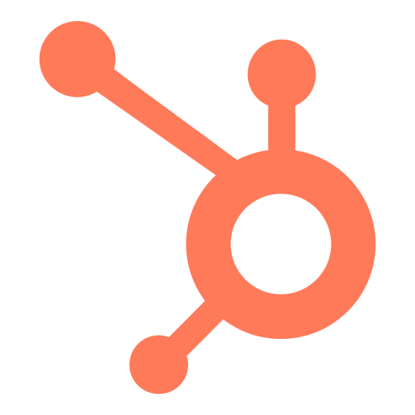

Hey!
I'm Arsalan Ahmed—a data enthusiast and aspiring data scientist, currently pursuing a master’s in International Information Systems at FAU Erlangen-Nuremberg. Before diving into data analytics and AI, I was a sales wizard—driving revenue and managing accounts in the North American SaaS industry at companies like Motive and DemandHub. What really captured my attention was how data could power business decisions.
This curiosity led me to pursue a master’s degree to sharpen my skills in data analytics and AI, while earning certifications to deepen my expertise. Now, as an aspiring data scientist, I aim to blend my sales experience with data-driven insights to drive strategic growth.
Whether I’m building financial models, creating interactive dashboards, or exploring machine learning, I’m always chasing that “aha!” moment when data tells a story. I thrive in dynamic environments where learning never stops, and I love connecting the dots between data and business strategy.
Beyond work and academics, I love staying active—whether it’s running, reading, or mastering calisthenics. I believe in pushing myself both mentally and physically to grow every day.
This curiosity led me to pursue a master’s degree to sharpen my skills in data analytics and AI, while earning certifications to deepen my expertise. Now, as an aspiring data scientist, I aim to blend my sales experience with data-driven insights to drive strategic growth.
Whether I’m building financial models, creating interactive dashboards, or exploring machine learning, I’m always chasing that “aha!” moment when data tells a story. I thrive in dynamic environments where learning never stops, and I love connecting the dots between data and business strategy.
Beyond work and academics, I love staying active—whether it’s running, reading, or mastering calisthenics. I believe in pushing myself both mentally and physically to grow every day.
Tech Stack
 SQL
SQL Power BI
Power BI Tableau
Tableau Python
Python C
C  Microsoft 365
Microsoft 365 Google Suite
Google Suite Salesforce
Salesforce HubSpot
 Google Data Studio
Google Data Studio HTML5
HTML5 CSS3
CSS3 JavaScript
JavaScriptProjects
CS50 Finance
CS50 Finance
A mock trading platform to buy and sell stocks listed on the New York Stock
Exchange (NYSE) at real-time prices developed for Harvard's CS50: Intro to Computer Science Problem Set.
View Project
Data Analysis using SQL (CS50)
Data Analysis using SQL (CS50)
SQL query solutions for Harvard's CS50 problem sets including:
Songs database analysis, Movies exploration, and the Fiftyville mystery.
View Project
Shell Pakistan: Financial Model for Investment Decision
Shell Pakistan: Financial Model for Investment Decision
Comprehensive financial model featuring FCFF, FCFE, DDM, and relative valuation methods for Shell Pakistan.
View Project
Sales Forecasting using Advanced Excel
Sales Forecasting using Advanced Excel
Advanced time-series analysis and forecasting model built using Excel's predictive analytics tools and advanced functions including Pivot Table, Charts, and Goal-Seek.
View Project
Data-Driven PowerPoint Slides
Data-Driven PowerPoint Slides
Designed and created professional PowerPoint slides featuring dynamic statistics,
charts, and graphs as a part of team-collaboration task with SalesOps team.
View Slides
Research Work
Economic Growth & Development in Martial Laws
Economic Growth & Development in Martial Laws
Analysis of Pakistan's economic trajectory under various military regimes and its impact on national development.
View Paper
Impact of Electronic Word-of-Mouth (e-WOM)
Impact of Electronic Word-of-Mouth (e-WOM)
Quantitative study analyzing how user-generated content influences consumer purchase intentions in digital markets.
View Paper
Child Rights Issues in Pakistan
Child Rights Issues in Pakistan
Qualitative research on systemic challenges and violations of children's rights in Pakistani society.
View Paper
ACHIEVEMENTS
- CS50: Introduction to Computer Science – Harvard University (Part of MSc. IIS) - Covered fundamental CS concepts, including C, Python, Data Analysis (SQL), Object-Oriented Programming (OOP), and Data Structures (Graphs & Trees).
- Data Analyst in Python – DataCamp - Gained proficiency in data manipulation, visualization, and analysis using Pandas, NumPy, Matplotlib, and Scikit-learn.
- Advanced Data Analysis with Excel – DataCamp - Mastered data cleaning, visualization, and advanced functions like PivotTables, Power Query, Charts, Goal-Seek.
- Data Analyst in Power BI – DataCamp - Gained expertise in data modeling, DAX, and interactive dashboard creation for business insights.
- Data Analyst in Tableau – DataCamp - Developed skills in data visualization, storytelling, and building interactive reports using Tableau.
- Web Development using Python & PHP – Aptech - Gained foundational knowledge of backend development, covering basic server-side scripting and database connectivity.
- Web Designing using HTML, CSS, JavaScript – Aptech - Learned the fundamentals of front-end web design, focusing on responsive layouts and user experience.
Certifications
- Completed 12 problem sets applying concepts to real-world coding challenges (GitHub repo: [link]).
- Strengthened algorithmic thinking, debugging skills, and computational problem-solving.
Achievements
DemandHub
- Trained and mentored new hires, served as a subject matter expert on CRM and software tools.- Stepped into a managerial position, conducted demos, and closed deals successfully.
- Reported to Leadership with visually engaging presentation and conducted Townhalls.
Motive (Formerly KeepTruckin')
- Closed ~$75,000 in TCV in the first year, resulting in a promotion to an upper, larger-scale segment (10-29 accounts).- Multiple shoutouts and recognition as Employee of the month and Employee of the quarter.
- Subject Matter Expert for Salesforce and Salesloft
Graduated Summa Cum Laude from IoBM
- Recipient of the CBM Financial Scholarship throughout the entire academic program.Accounting Gold Medalist
- Scored 100/100 in the HSSC-II Accounting Exam, topping my city as the only one to achieve this feat.Zenith Education Academy (ZEA)
- Founded and scaled a tutoring academy, focusing on career development for secondary and higher secondary students teaching technical subjects.- Achieved six-figure revenue in 12 months, offering career counselling and mentoring.
Beyond Data
FAUMUN (Friedrich-Alexander University Model United Nations)
- Active participant during my first semester of master’s studies, engaging in global policy discussions and diplomacy simulations.- Honing skills in public speaking, negotiation, and international relations.
Pakistan Students Association Erlangen-Nürnberg (Volunteer Work)
- As a member of PSA, supported incoming Pakistani students in adapting to life in Germany, fostered cultural exchange and networking among Pakistani students in the region.- Hosted the Iftar Event in Erlangen, Bismarckstraße during Ramadan, as a community-building and social engagement event within the Pakistani community.
eBiz Ventures LLC (Co-Founder)
- Launched an eCommerce startup with two partners, selling on Amazon through Wholesale, Dropshipping, and Private Label models.- Managed product research, supplier negotiations, and store optimization to drive online sales.
Executive Director - Gametech, Digicon Informatics Society (IoBM)
- Led the Gametech division, promoting awareness and engagement in esports among students.- Organized Experia IV, the biggest gaming event at IoBM, featuring competitive tournaments, including games like Counter-Strike 2, Valorant, DOTA, FIFA, and TEKKEN.
Executive Member - Literary & Public Speaking Society (IoBM)
- Contributed to hosting debates, writing competitions, and literary events, as an active member of LPSS-IoBM.Calisthenics, Running, Reading
- Passionate about fitness, consistently training in calisthenics and long-distance running.- Avid reader with a deep interest in history—favorite book: Sapiens by Yuval Noah Harari.
Get in touch!